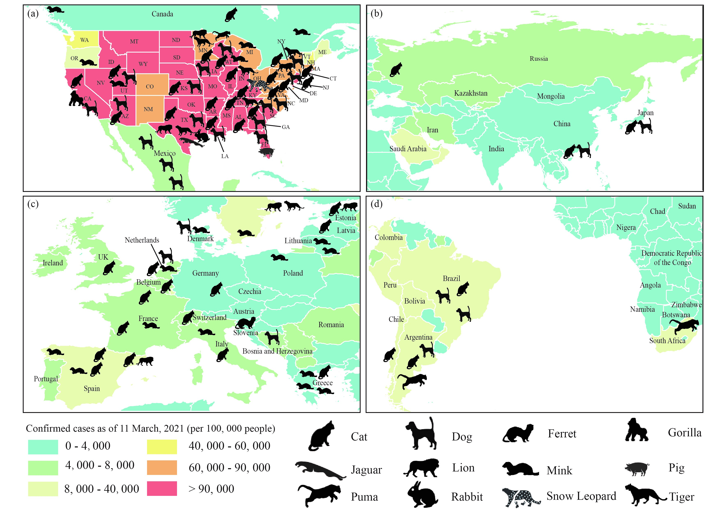

New Approaches to Anticipate the Risk of Reverse Zoonosis

Abstract
The coronavirus disease 2019 (COVID-19) pandemic can cause reverse zoonoses (i.e., human–animal transmission of COVID-19). It is vital to utilize up-to-date methods to improve the control, management, and prevention of reverse zoonoses. Awareness of reverse zoonoses should be raised at both individual and regional/national levels for better protection of both humans and animals.
Human Activities Exacerbate the Risks from Zoonotic Diseases
The COVID-19 has been the most widespread zoonotic pandemic to affect humanity in over a century, reflecting the problem of human activities exacerbating the risks of pathogen spillover, such as hunting, butchering, farming, deforestation, reforestation, irrigation, and traveling. Moreover, it has caused ecological feedbacks at local scales (e.g., bi-directional transmission of COVID-19 between animals and humans, which could augment the COVID-19 risk in both animals and humans).
Reverse Zoonosis of COVID-19
Infection of animals with severe acute respiratory syndrome coronavirus 2 (SARS-CoV-2) from humans has highlighted the importance of understanding ‘reverse zoonosis’ (zooanthroponosis). Compared with three of the four possible routes of transmission for zoonotic diseases (i.e., animal–human, animal–animal, human–human), which have been well studied and confirmed, human–animal transmission lacks sufficient research due to the rare occurrence prior to COVID-19. Once such reverse zoonosis occurs it may cause the further evolution of viruses and affect the effectiveness of potential COVID-19 vaccines. Given the growing populations of livestock and other domesticated animals, increasing proximity between animals and humans in multiple settings (e.g., wet markets, home, and animal production facilities), and the relatively fewer resources assigned for animal testing during human outbreaks with zoonotic potential (particularly asymptomatic infections), new animals diseases may spread undetected. Proactive consideration of such reverse zoonosis enables the creation of management strategies. Therefore, reverse zoonoses require more rigorous and widespread macroecological and microbial studies.

Figure 1 Coronavirus Disease 2019 (COVID-19) Natural Infections of Pet, Zoo, and Livestock Animals as of 11 March 2021 Mapped onto Number of Confirmed Cases in the Human Population.
Building Resilience against Future Reverse Zoonoses
Reverse zoonoses may cause reduction and even extinction of the wild animal populations susceptible to viruses, which could destroy local biodiversity and ecological balance.
Preventing reverse zoonoses also requires understanding pathogen feedback loops at the wildlife–livestock/pet–human interface. This will require greater capacities and commitments for pathogen discovery, mutation rate detection, and surveillance, in order to improve the prediction of pandemic potential, leading to management actions that interrupt possible pathways of spillover and transmission. Understanding these key evolutionary processes and ecological interactions calls for integrated virus–animal–human–environment surveillance systems. Spatial lifecourse epidemiology also provides a uniform analytical framework to link ecological surveillance to the national disease reporting system.